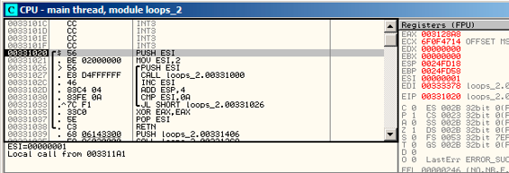
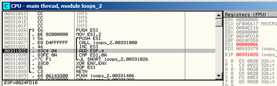
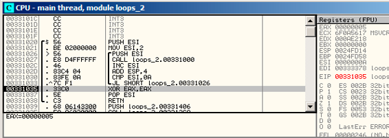
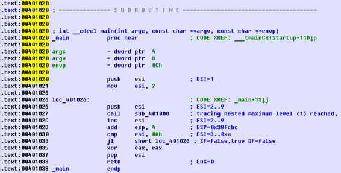

第十四章
循环结构
14.1 简单的例子
14.1.1 x86
在x86指令集中，有一些独特的LOOP指令，它们会检查ECX中的值，如果它不是0的话，它会逐渐递减ECX的值（减一），然后把控制流传递给LOOP操作符提供的标签处。也许，这个指令并不是多方便，所以，我没有看到任何现代编译器自动使用它。如果你看到哪里的代码用了这个结构，那它很有可能是程序员手写的汇编代码。
顺带一提，作为家庭作业，你可以试着解释以下为什么这个指令如此不方便。
C/C++循环操作是由for()、while()、do/while()命令发起的。
让我们从for()开始吧。
这个命令定义了循环初始值（为循环计数器设置初值），循环条件（比如，计数器是否大于一个阈值？），以及在每次迭代（增/减）时和循环体中做什么。
for(初始化; 条件; 每次迭代时执行的语句)
{
循环体;
}
所以，它生成的代码也将被考虑为4个部分。
让我们从一个简单的例子开始吧：
#include <stdio.h>
void f(int i)
{
printf ("f(%d)
", i);
};
int main()
{
int i;
for (i=2; i<10; i++)
f(i);
return 0;
};
反汇编结果如下（MSVC 2010）：
清单14.1: MSVC 2010
_i$ = -4
_main PROC
push ebp
mov ebp, esp
push ecx
mov DWORD PTR _i$[ebp], 2 ; loop initialization
jmp SHORT $LN3@main
$LN2@main:
mov eax, DWORD PTR _i$[ebp] ; here is what we do after each iteration:
add eax, 1 ; add 1 to i value
mov DWORD PTR _i$[ebp], eax
$LN3@main:
cmp DWORD PTR _i$[ebp], 10 ; this condition is checked *before* each iteration
jge SHORT $LN1@main ; if i is biggest or equals to 10, let’s finish loop
mov ecx, DWORD PTR _i$[ebp] ; loop body: call f(i)
push ecx
call _f
add esp, 4
jmp SHORT $LN2@main ; jump to loop begin
$LN1@main: ; loop end
xor eax, eax
mov esp, ebp
pop ebp
ret 0
_main ENDP
看起来没什么特别的。
GCC 4.4.1生成的代码也基本相同，只有一些微妙的区别。
清单14.1: GCC 4.4.1
main proc near ; DATA XREF: _start+17
var_20 = dword ptr -20h
var_4 = dword ptr -4
push ebp
mov ebp, esp
and esp, 0FFFFFFF0h
sub esp, 20h
mov [esp+20h+var_4], 2 ; i initializing
jmp short loc_8048476
loc_8048465:
mov eax, [esp+20h+var_4]
mov [esp+20h+var_20], eax
call f
add [esp+20h+var_4], 1 ; i increment
loc_8048476:
cmp [esp+20h+var_4], 9
jle short loc_8048465 ; if i<=9, continue loop
mov eax, 0
leave
retn
main endp
现在，让我们看看如果我们打开了优化开关会得到什么结果（/Ox）：
清单14.3: 优化后的 MSVC
_main PROC
push esi
mov esi, 2
$LL3@main:
push esi
call _f
inc esi
add esp, 4
cmp esi, 10 ; 0000000aH
jl SHORT $LL3@main
xor eax, eax
pop esi
ret 0
_main ENDP
要说它做了什么，那就是：本应在栈上分配空间的变量i被移动到了寄存器ESI里面。因为我们这样一个小函数并没有这么多的本地变量，所以它才可以这么做。 这么做的话，一个重要的条件是函数f（）不能改变ESI的值。我们的编译器在这里倒是非常确定。假设编译器决定在f（）中使用ESI寄存器的话，ESI的值将在函数的初始化阶段被压入栈保存，并且在函数的收尾阶段将其弹出（注：即还原现场，保证程序片段执行前后某个寄存器值不变）。这个操作有点像函数开头和结束时的PUSH ESI/ POP ESI操作对。
让我们试一试开启了最高优化的GCC 4.4.1（-03优化）。
清单14.4: 优化后的GCC 4.4.1
main proc near
var_10 = dword ptr -10h
push ebp
mov ebp, esp
and esp, 0FFFFFFF0h
sub esp, 10h
mov [esp+10h+var_10], 2
call f
mov [esp+10h+var_10], 3
call f
mov [esp+10h+var_10], 4
call f
mov [esp+10h+var_10], 5
call f
mov [esp+10h+var_10], 6
call f
mov [esp+10h+var_10], 7
call f
mov [esp+10h+var_10], 8
call f
mov [esp+10h+var_10], 9
call f
xor eax, eax
leave
retn
main endp
GCC直接把我们的循环给分解成顺序结构了。
循环分解（Loop unwinding）对这些没有太多迭代次数的循环结构来说是比较有利的，移除所有循环结构之后程序的效率会得到提升。但是，这样生成的代码明显会变得很大。
好的，现在我们把循环的最大值改为100。GCC现在生成如下：
清单14.5: GCC
public main
main proc near
var_20 = dword ptr -20h
push ebp
mov ebp, esp
and esp, 0FFFFFFF0h
push ebx
mov ebx, 2 ; i=2
sub esp, 1Ch
nop ; aligning label loc_80484D0 (loop body begin) by 16-byte border
loc_80484D0:
mov [esp+20h+var_20], ebx ; pass i as first argument to f()
add ebx, 1 ; i++
call f
cmp ebx, 64h ; i==100?
jnz short loc_80484D0 ; if not, continue
add esp, 1Ch
xor eax, eax ; return 0
pop ebx
mov esp, ebp
pop ebp
retn
main endp
这时，代码看起来非常像MSVC 2010开启/Ox优化后生成的代码。除了这儿它用了EBX来存储变量i。 GCC也确信f（）函数中不会修改EBX的值，假如它要用到EBX的话，它也一样会在函数初始化和收尾时保存EBX和还原EBX，就像这里main（）函数做的事情一样。
14.1.2 OllyDbg
让我们通过/Ox和/Ob0编译程序，然后放到OllyDbg里面查看以下结果。
看起来OllyDbg能够识别简单的循环，然后把它们放在一块，为了演示方便，大家可以看图14.1。
通过跟踪代码（F8， 步过）我们可以看到ESI是如何递增的。这里的例子是ESI = i = 6： 图14.2。
9是i的最后一个循环制，这也就是为什么JL在递增的最后不会触发，之后函数结束，如图14.3。

图14.1： OllyDbg main（）开始

图14.2： OllyDbg： 循环体刚刚递增了i，现在i=6

图14.3： OllyDbg中ESI=10，循环终止
14.1.2 x86:跟踪
像我们所见的一样，手动在调试器里面跟踪代码并不是一件方便的事情。这也就是我给自己写了一个跟踪程序的原因。
我在IDA中打开了编译后的例子，然后找到了PUSH ESI指令（作用：给f（）传递唯一的参数）的地址，对我的机器来说是0x401026，然后我运行了跟踪器：
tracer.exe -l:loops_2.exe bpx=loops_2.exe!0x00401026
BPX的作用只是在对应地址上设置断点然后输出寄存器状态。
在tracer.log中我看到执行后的结果：
PID=12884|New process loops_2.exe
(0) loops_2.exe!0x401026
EAX=0x00a328c8 EBX=0x00000000 ECX=0x6f0f4714 EDX=0x00000000
ESI=0x00000002 EDI=0x00333378 EBP=0x0024fbfc ESP=0x0024fbb8
EIP=0x00331026
FLAGS=PF ZF IF
(0) loops_2.exe!0x401026
EAX=0x00000005 EBX=0x00000000 ECX=0x6f0a5617 EDX=0x000ee188
ESI=0x00000003 EDI=0x00333378 EBP=0x0024fbfc ESP=0x0024fbb8
EIP=0x00331026
FLAGS=CF PF AF SF IF
(0) loops_2.exe!0x401026
EAX=0x00000005 EBX=0x00000000 ECX=0x6f0a5617 EDX=0x000ee188
ESI=0x00000004 EDI=0x00333378 EBP=0x0024fbfc ESP=0x0024fbb8
EIP=0x00331026
FLAGS=CF PF AF SF IF
(0) loops_2.exe!0x401026
EAX=0x00000005 EBX=0x00000000 ECX=0x6f0a5617 EDX=0x000ee188
ESI=0x00000005 EDI=0x00333378 EBP=0x0024fbfc ESP=0x0024fbb8
EIP=0x00331026
FLAGS=CF AF SF IF
(0) loops_2.exe!0x401026
EAX=0x00000005 EBX=0x00000000 ECX=0x6f0a5617 EDX=0x000ee188
ESI=0x00000006 EDI=0x00333378 EBP=0x0024fbfc ESP=0x0024fbb8
EIP=0x00331026
FLAGS=CF PF AF SF IF
(0) loops_2.exe!0x401026
EAX=0x00000005 EBX=0x00000000 ECX=0x6f0a5617 EDX=0x000ee188
ESI=0x00000007 EDI=0x00333378 EBP=0x0024fbfc ESP=0x0024fbb8
EIP=0x00331026
FLAGS=CF AF SF IF
(0) loops_2.exe!0x401026
EAX=0x00000005 EBX=0x00000000 ECX=0x6f0a5617 EDX=0x000ee188
ESI=0x00000008 EDI=0x00333378 EBP=0x0024fbfc ESP=0x0024fbb8
EIP=0x00331026
FLAGS=CF AF SF IF
(0) loops_2.exe!0x401026
EAX=0x00000005 EBX=0x00000000 ECX=0x6f0a5617 EDX=0x000ee188
ESI=0x00000009 EDI=0x00333378 EBP=0x0024fbfc ESP=0x0024fbb8
EIP=0x00331026
FLAGS=CF PF AF SF IF
PID=12884|Process loops_2.exe exited. ExitCode=0 (0x0)
我们可以看到ESI寄存器是如何从2变为9的。
甚至于跟踪器可以收集某个函数调用内所有寄存器的值，所以它被叫做跟踪器（a trace）。每个指令都会被它跟踪上，所有感兴趣的寄存器值都会被它提示出来，然后收集下来。 然后可以生成IDA能用的.idc-script。所以，在IDA中我知道了main()函数地址是0x00401020，然后我执行了：
tracer.exe -l:loops_2.exe bpf=loops_2.exe!0x00401020,trace:cc
bpf的意思是在函数上设置断点。
结果是我得到了loops_2.exe.idc和loops_2.exe_clear.idc两个脚本。我加载loops_2.idc到IDA中，然后可以看到图12.4所示的内容。
我们可以看到ESI在循环体开始时从2变化为9，但是在递增完之后，它的值从9（译注：作者原文是3，但是揣测是笔误，应为9。）变为了0xA（10）。我们也可以看到main（）函数结束时EAX被设置为了0。
编译器也生成了loops_2.exe.txt，包含有每个指令执行了多少次和寄存器值的一些信息：
清单14.6: loops_2.exe.txt
0x401020 (.text+0x20), e= 1 [PUSH ESI] ESI=1
0x401021 (.text+0x21), e= 1 [MOV ESI, 2]
0x401026 (.text+0x26), e= 8 [PUSH ESI] ESI=2..9
0x401027 (.text+0x27), e= 8 [CALL 8D1000h] tracing nested maximum level (1) reached,
skipping this CALL 8D1000h=0x8d1000
0x40102c (.text+0x2c), e= 8 [INC ESI] ESI=2..9
0x40102d (.text+0x2d), e= 8 [ADD ESP, 4] ESP=0x38fcbc
0x401030 (.text+0x30), e= 8 [CMP ESI, 0Ah] ESI=3..0xa
0x401033 (.text+0x33), e= 8 [JL 8D1026h] SF=false,true OF=false
0x401035 (.text+0x35), e= 1 [XOR EAX, EAX]
0x401037 (.text+0x37), e= 1 [POP ESI]
0x401038 (.text+0x38), e= 1 [RETN] EAX=0
生成的代码可以在此使用：

图14.4： IDA加载了.idc-script之后的内容
14.1.4 ARM
无优化 Keil + ARM模式
main
STMFD SP!, {R4,LR}
MOV R4, #2
B loc_368
; ---------------------------------------------------------------------------
loc_35C ; CODE XREF: main+1C
MOV R0, R4
BL f
ADD R4, R4, #1
loc_368 ; CODE XREF: main+8
CMP R4, #0xA
BLT loc_35C
MOV R0, #0
LDMFD SP!, {R4,PC}
迭代计数器i存储到了R4寄存器中。
MOV R4,#2初始化i。
MOV R0,R4 和 BL f 指令组成循环体，第一个指令为f（）准备参数，第二个用来调用它。
ADD R4,R4, #1 指令在每次迭代中为i加一。
CMP R4,#0xA 将i和0xA（10）比较，下一个指令BLT（Branch Less Than，分支小于）将在i<10时跳转。
否则， R0将会被写入0（因为我们的函数返回0），然后函数执行终止。
优化后的 Keil + ARM模式
_main
PUSH {R4,LR}
MOVS R4, #2
loc_132 ; CODE XREF: _main+E
MOVS R0, R4
BL example7_f
ADDS R4, R4, #1
CMP R4, #0xA
BLT loc_132
MOVS R0, #0
POP {R4,PC}
事实上，是一样的。
优化后的 Xcode（LLVM） + thumb-2 模式
_main
PUSH {R4,R7,LR}
MOVW R4, #0x1124 ; "%d
"
MOVS R1, #2
MOVT.W R4, #0
ADD R7, SP, #4
ADD R4, PC
MOV R0, R4
BLX _printf
MOV R0, R4
MOVS R1, #3
BLX _printf
MOV R0, R4
MOVS R1, #4
BLX _printf
MOV R0, R4
MOVS R1, #5
BLX _printf
MOV R0, R4
MOVS R1, #6
BLX _printf
MOV R0, R4
MOVS R1, #7
BLX _printf
MOV R0, R4
MOVS R1, #8
BLX _printf
MOV R0, R4
MOVS R1, #9
BLX _printf
MOVS R0, #0
POP {R4,R7,PC}
事实上，printf是在我的f（）函数里调用的：
void f(int i)
{
// do something here
printf ("%d", i);
};
所以，LLVM不仅仅是拆解了（unroll）循环，而且还把我的短函数f（）给作为内联函数看待了，这样，它把它的函数体内插了8遍，而不是用一个循环来解决。对于我们这种简短的函数来说，编译器这样做是有可能的。
ARM64: Optimizing GCC 4.9.1
ARM64: Non-optimizing GCC 4.9.1
14.1.5 MIPS
14.1.6 更多的一些事情
在编译器生成的代码里面，我们可以发现在i初始化之后，循环体并不会被执行，转而是先检查i的条件，在这之后才开始执行循环体。这么做是正确的，因为，如果循环条件在一开始就不满足，那么循环体是不应当被执行的。比如，在下面的例子中，就可能出现这个情况：
for (i=0; i<total_entries_to_process; i++)
loop_body;
如果total_entries_to_process等于0，那么循环体就不应该被执行。这就是为什么应当在循环体被执行之前检查循环条件。 但是，开启编译器优化之后，如果编译器确定不会出现上面这种情况的话，那么条件检查和循环体的语句可能会互换（比如我们上面提到的简单的例子以及Keil、Xcode（LLVM）、MSVC的优化模式）。